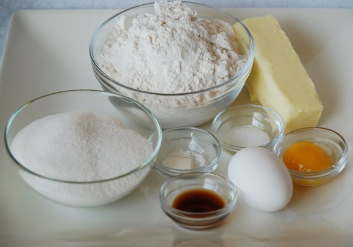
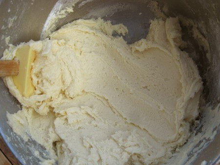

Sugar Cookies
Serves: 60
Ingredients
- 1 1/2 cups butter, softened
- 2 cups white sugar
- 4 eggs
- 1 teaspoon vanilla extract
- 5 cups all-purpose flour
- 2 teaspoons baking powder
- 1 teaspoon salt
Directions
1. In a large bowl, cream together butter and sugar until smooth.
2. Beat in eggs and vanilla. Stir in the flour, baking powder, and salt.
3. Cover, and chill dough for at least one hour (or overnight).
4. Preheat oven to 400 degrees F (200 degrees C).
5. Roll out dough on floured surface 1/4 to 1/2 inch thick. Cut into shapes with any cookie cutter.
6. Place 1 inch apart on ungreased cookie sheets.
7. Bake 6 to 8 minutes in preheated oven. Cool completely.
Click here for an easy frosting recipe.
Credits: Adapted from "The Best Rolled Sugar Cookies," - allrecipes, Canada, Courtesy of Jill Saunders